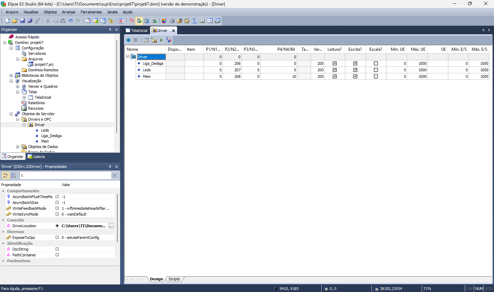

01
Drivers de software
São componentes que permitem que um programa se comunique com um equipamento ou serviço.
Na automação industrial, os termos drivers e drives podem representar elementos diferentes. Os drivers de software permitem a comunicação entre sistemas, enquanto os drives de potência controlam o funcionamento dos motores elétricos.
Ambos são importantes para que os equipamentos troquem informações e executem os movimentos desejados.
Tabela Mostrando váriaveis no Driver


Apesar dos nomes parecidos, cada tipo desempenha uma função diferente no sistema de automação.
São componentes que permitem que um programa se comunique com um equipamento ou serviço.
É um padrão de comunicação industrial que permite trocar dados entre equipamentos e aplicações, com recursos de segurança.
Controlam a frequência e a tensão fornecidas ao motor, permitindo ajustar sua velocidade e aceleração.
Controlam servomotores em aplicações que exigem precisão de velocidade, posição e movimento.

Um driver de software pode interpretar os dados disponibilizados por um CLP e permitir que um supervisório apresente essas informações na tela. Algumas soluções utilizam bibliotecas, como arquivos DLL, ou padrões de comunicação, como OPC UA.
Já os drives de potência recebem comandos do sistema de controle e ajustam a energia elétrica fornecida aos motores. O inversor de frequência é utilizado para regular a velocidade, enquanto o servodrive permite controlar movimentos com elevada precisão.
Esses equipamentos devem ser dimensionados e configurados de acordo com o motor, a aplicação e os requisitos de segurança.
Os drivers de software facilitam a integração entre sistemas, enquanto os drives de potência permitem controlar motores de acordo com as necessidades do processo industrial.